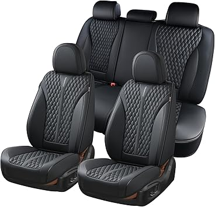
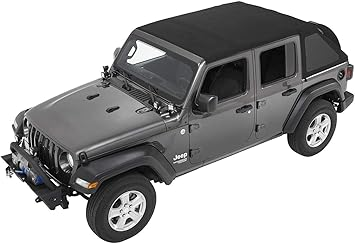
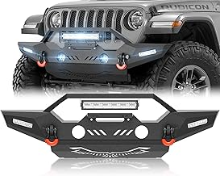
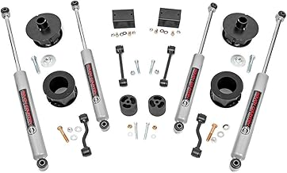
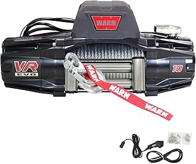
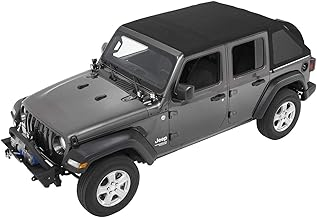

ARB Front Bumper Jeep JLU — Editor's pick
ARB Front Bumper Jeep JLU — Editor's pick
Bartact Seat Covers Jeep JLU — Best seller Rough Country Lift Kit Jeep JLU — Best seller
Rough Country Lift Kit Jeep JLU — Best seller
Bestop Soft Top Jeep Wrangler JLU — Consistently ratedMay 2026
jlutruck isn't one-size-fits-all. What's perfect for one buyer can miss the mark for another. Here's how to figure out what fits you.
Not measuring — "It looked bigger online" is the #1 return reason for jlutruck. Measure twice.
Panic buying on sale days — Prime Day and Black Friday jlutruck deals aren't always real discounts. Check year-round pricing.
Ignoring the fine print — Some jlutruck listings look great until you realize key parts are sold separately.
Trusting fake reviews — Look for reviews with photos and specific details. Generic praise is often planted.




⭐ 4.2 · $1,099.99
⭐ 4.8 · $590.00
⭐ 4.4 · $369.95
⭐ 4.2 · $143.52
⭐ 4.5 · $268.99
ARB Front Bumper Jeep JLU — Editor's pick
Bartact Seat Covers Jeep JLU — Best sellerRough Country Lift Kit Jeep JLU — Best seller
Bestop Soft Top Jeep Wrangler JLU — Consistently ratedWe update our jlutruck reviews as new products launch. Bookmark jlutruck.com for the latest.